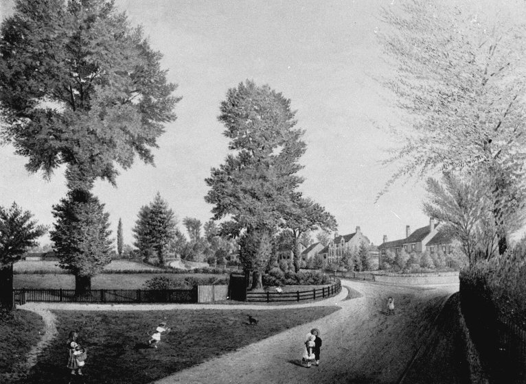
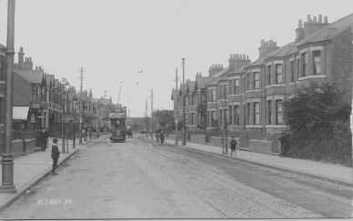

Local History In 1851, following the boom in the watchmaking trade in Coventry and the subsequent overcrowding of the city, 30 acres of prime farm land was bought by Coventry Freehold Land Society. The land was outside of the city and centred on a farmhouse close to what is now Moor Street. The farm was owned by John Moore. From this single building the area grew and spread from 1853 into what is now Earlsdon. Even after the decline of the watchmaking industry, Earlsdon continued to expand into one of the most favourable residential districts around Coventry. Earlsdon was incorporated into the City in 1890 but was still almost cut off from it. It was not until 1898, when Albany Road was opened, that development gained pace. The City tramway system was extended along the Butts up Albany Road into the main shopping area which quickly grew as front rooms of houses became converted into even more shops.  By 1918, the area was fully developed as it is today and, with
little redevelopment, Earlsdon has kept much of its original character. Much of the historical information and images on these pages have been researched and collected by the Earlsdon Research Group (formerly the Earlsdon Society) and a summary of Earlsdon history is available from the Earlsdon History Timeline. Earlsdon people
Earlsdon Places
|